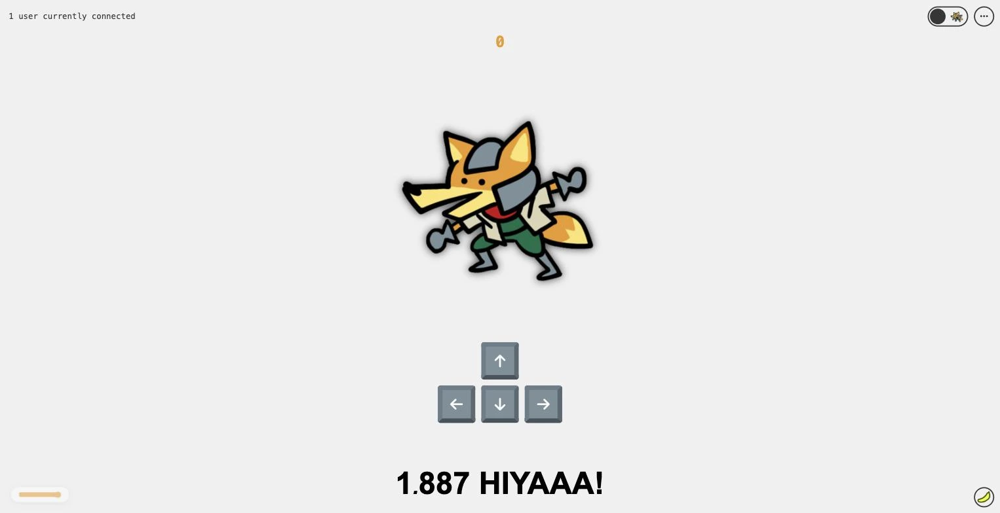
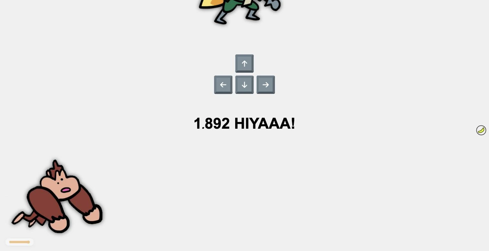

La promesse
Le temps réel, expliqué en dix secondes.
Tableau de bord, compteur de présence, notification instantanée : le mécanisme est le même. StarFox le montre sans détour.
Lab · Démonstration temps réel
Un compteur unique, partagé en direct par tous ceux qui ont la page ouverte.

Le plus petit projet du lot, et le plus parlant : un nombre, affiché à l’identique chez tout le monde. Quand quelqu’un le fait monter, il bouge instantanément chez les autres. Ouvrez deux onglets, appuyez d’un côté, regardez de l’autre.
La promesse
Le temps réel, expliqué en dix secondes.
Tableau de bord, compteur de présence, notification instantanée : le mécanisme est le même. StarFox le montre sans détour.
1
compteur, commun à tous les visiteurs.
En direct
Le nombre de connectés s’affiche et bouge en temps réel.
4
touches, et rien d’autre à apprendre.
Léger
Rien à sauvegarder, rien à migrer, aucun compte à gérer.

StarFox est notre plus vieux projet encore en ligne. Il tourne depuis 2019.
Ouvrir StarFoxLe même canal en direct alimente nos jeux multijoueurs, et peut alimenter votre tableau de bord.
Sans base de données ni compte, il n’y a rien à maintenir.
Deux onglets suffisent pour voir ce que « temps réel » veut dire.
Décrivez-le en quelques lignes. Nous répondons sous 48 heures ouvrées, avec des questions, un délai et un ordre de prix.
Nous contacter